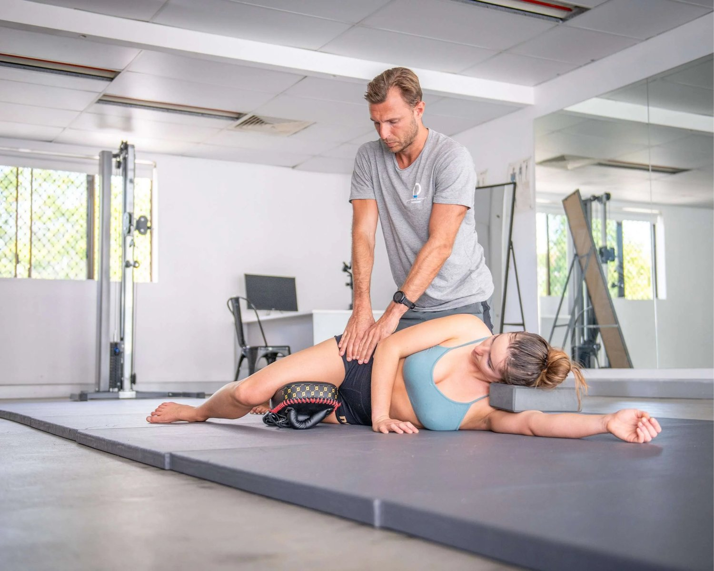
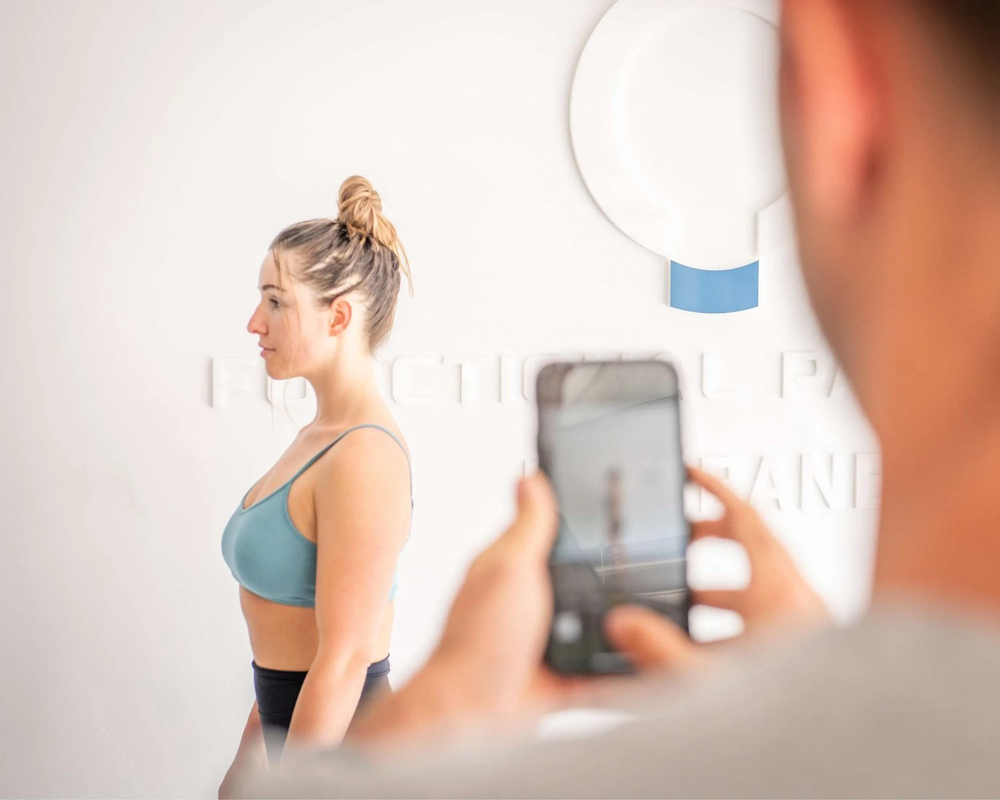
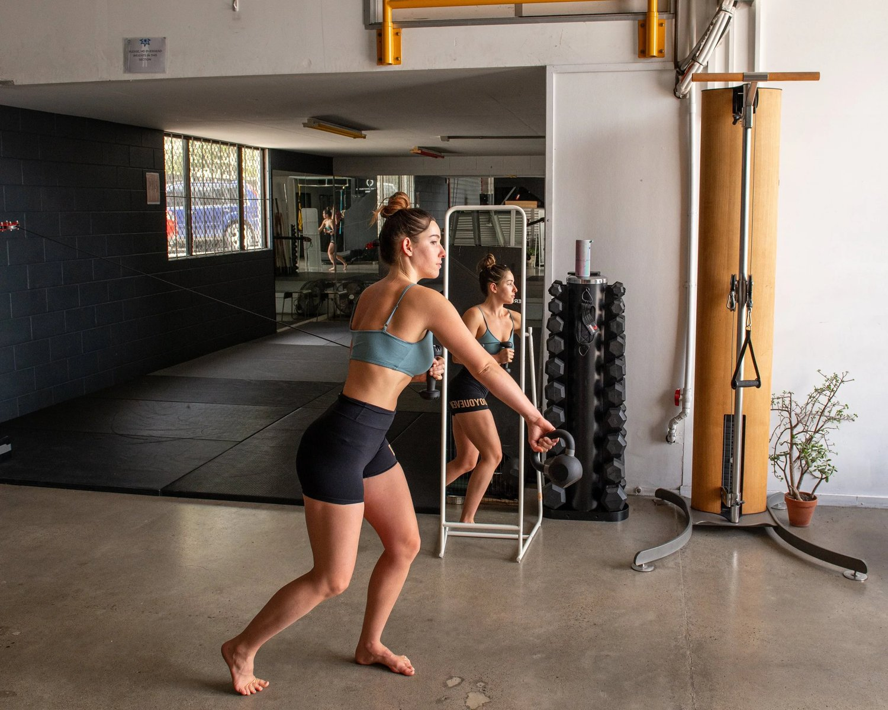
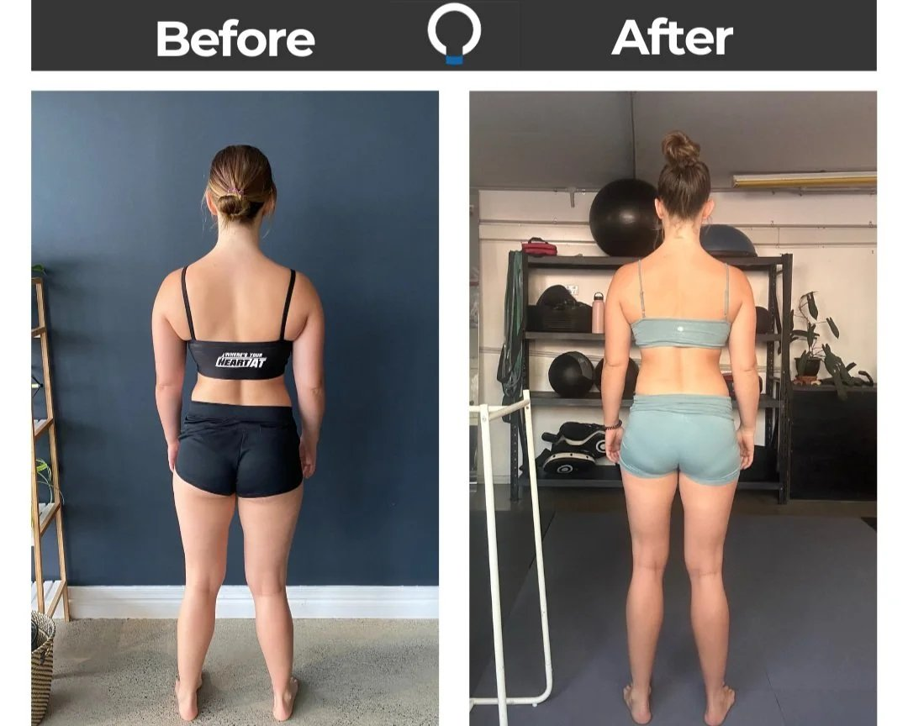

Signs of hypermobility:
Hypermobility is a condition where the body has excessive range of motion in all or certain joints. Common signs of hypermobility include:
Joint and Muscle Pain/Stiffness
If you have hypermobility syndrome, you're likely to experience pain in your shoulders, knees, wrists, elbows, and fingers.
Headaches
People with hypermobility often suffer from painful and recurrent headaches.
Joint Noises
Clicking sounds in the joints are common and can occur even in people without hypermobility syndrome. However, if you have this condition, the joint popping can be louder and often painful.
Easy Joint Dislocation
Those with hypermobility are prone to easily dislocating their joints. This means the joints may pop out of their sockets, causing severe pain. This is particularly common in individuals with Ehlers-Danlos Syndrome (EDS).
Fatigue/Lack of Energy
Chronic fatigue is a common issue in many disorders, including hypermobility syndrome. Pain and stiffness can disrupt sleep, leading to significant tiredness. The ongoing, chronic pain often drains energy and motivation.
Frequent Injuries
Weak collagen and impaired movement patterns throughout the body increases susceptibility to injuries, particularly affecting the musculoskeletal system. Sprains, dislocations, and muscle tears are more likely to occur.
Digestive Issues
Hypermobility syndrome can cause digestive problems. Coordination problems with involuntary muscle movements in the gut can disrupt food movement through the digestive tract. This can cause symptoms like irritable bowel syndrome (IBS) and acid reflux.
Skin Characteristics
In some cases, hypermobility syndrome results in skin that is thin, stretchy, or saggy. This type of skin is more prone to trauma such as bruises, cuts, and tears. It may also scar easily, with scars that do not fade or heal properly.
Scoliosis
Hypermobility syndrome can lead to scoliosis, a lateral curvature of the spine. Since the spine consists of multiple joints, scoliosis can severely affect spinal health.
Poor Balance/Coordination
Hyper mobile joints, weak connective tissue, and poor posture often result in balance and coordination issues.

Exercises for joint hypermobility
Both physical therapy and physical activity in general are cornerstone to hyper mobility. Unfortunately, it is very hard to move with correct form with hyermobile joints.
Hypermobility also causes chronic fatigue and an increased risk of injury.
With all of this in mind, is it still worth undergoing hypermobile joints exercises or hypermobility physiotherapy?
The answer is a resounding yes. However, it is extremely important to undergo the correct type of exercise.
Here are the top 3 things to take into consideration when formulating your hypermobility workout plan.

#1: Never, ever passively stretch.
Your body is already hyper flexible. The joint pain and tightness you experience is a result of being too mobile. Increasing mobility may feel nice in the short term, but it will continue to make your problems worse.
Your number one priority should be to introduce healthy amounts of tension to your tissue. Quit the yoga class and start doing slow, tensioned corrective movements.
Stretching is not reducing your chance of injury. In fact, it is increasing your injury risk. To decrease your chance of injury, always move slowly and use a mirror. Your goal should be to train HEALTHY ranges of motion.
Never allow your body to go past the point an average body can go past. This is the first step to reducing the negative externalities that comes form hypermobility.
#2: Never Load Your Spine Bilaterally

Firstly, let us explore what 'loading your spine' means?
This is when you add weight to an exercises that creates a downwards force on your spine. This does not only include barbell squats, there are a lot of exercises that compress the spine.
You can compress the spine by adding a barbell to your shoulders. This is the most common, clear cut example of spinal compression.
However, you can also compress your spine while holding weight by your side or in front of your body. You can also compress your spine in a seated position.
Here are a list of common exercises that compress the spine bilaterally:
-
Barbell Squats: Especially when performed with heavy weights, the load of the barbell across the shoulders creates downward pressure on the spine.
-
Leg Press: The position during a leg press, particularly with heavy weights, places significant force on the lower back. This compresses the lumbar spine.
-
Deadlifts: This exercise involves lifting a heavy weight off the ground, which can generate substantial spinal compression.
-
Overhead Press: Lifting weights overhead compresses the spine as it bears the load directly above the head.
-
Bent Over Rows: This exercise involves bending forward with a barbell. This movement can place considerable stress on the lower back.
-
Snatches and Clean and Jerks: These Olympic lifts require lifting weights from the floor to overhead in one motion (snatch) or two motions (clean and jerk). This places high levels of stress throughout the spine.
-
Box Jumps: The impact of landing from a jump can compress the spine, particularly with repetitive jumping or when landing from a high box.
-
Smith Machine Exercises: Exercises on the Smith machine that involve squatting or pressing can lead to compression. The fixed path of the bar can restrict natural body movements, putting additional stress on the spine.
Now, let us look into why compression on the spine is such as issue in hypermobility.
When your body is hyper mobile, it struggles to find balance or symmetry even more so than the average person.
Asymmetries and maladaptations in your movement greatly increase the risk of injury. Before injury occurs, exercises and movement in general is likely to make your asymmetries worse.
Because of this, it is extremely important to base your training around creating symmetry.
Loading your spine greatly exacerbates asymmetries because your body will never load symmetrically. In hypermobility, your spine, hips, glutes and everything in between will load differently on your left than on your right.
This greatly worsens joint hypermobility symptoms. Going to a physio for hypermobility may address some symptoms. However, if you are still loading your spine asymmetrically, it will be extremely difficult to see long-term results.
#3: Focus On Your Gait (walking and running)

Focusing on your gait does not mean spending all of your time walking or running. It means participating in exercise that support your ability to walk and run correctly.
In hypermobility, walking and running can feel very uncoordinated and unstable.
Hypermobile knee joints, hypermobility of the shoulders and hypermobility in the neck make walking feel 'disconnected.'
To feel tighter and more coordinated, focus on unilateral movements and rotation. Unilateral movement means movement that breaks up your two sides. For example, a squat is bilateral but a lunge is unilateral.
This is important because walking and running are both unilateral movements. They are also movements where you are rotating and moving forward in space.
Most exercise are 'up and down' and include zero rotation. This will decondition your ability to walk with stability and isolates your muscles.
These isolated, over-stretched muscles make walking and moving in general feel uncomfortable. All hypermobility syndrome exercises should work to make your tissue more integrated, not more isolated.
hypermobility vs hyperflexibility
How do you know you hypermobile and not just flexible?
Flexibility is what your body is able to undergo all average ranges of motion with ease. Hypermobility is when the body has excessive ranges of motion.
A good test for hypermobility is to extend your elbow and check if it goes past a straight line. You can also try this hypermobility test with your knees.
hypermobility & cracking joints

If your joints crack, it is likely because your body is exceeding ranges of motion. This abnormal range of movement causes joints to rub together and click.
When addressing joint clicking in hypermobility, it is important to address the system.
Creating more integration, removing any stretching and increasing symmetry in your gait should address any clicking.
While it is not an easy and quick fix, it will provide lasting relief. Hypermobility is a nervous system and gait disorder. Your tissue is not just hypermobile, your nervous system is not telling your fascial system where to stop.
When we support the nervous and fascial systems of the body, hypermobility improves. We support the nervous system and the fascia by teaching the body to move correctly.
This correct movement improves mechanotransduction (also knows as the bodies ability to sense mechanical stimuli). When your body can sense your body and environment better, it knows where to stop.